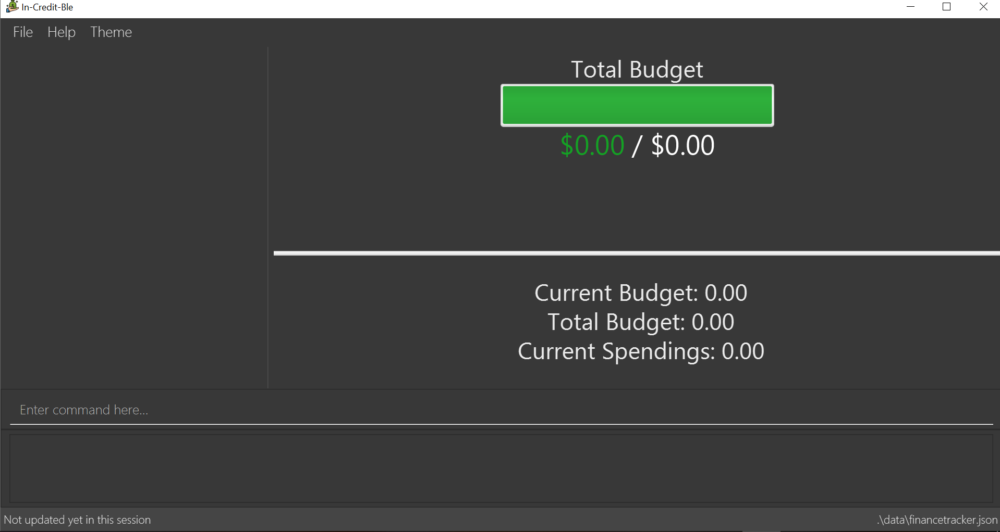

Overview
In-Credit-Ble is a desktop Finance Tracker that is tailored to help users manage their finances and keep track of their budget in an easy and efficient manner. It is designed for those who prefer to work with a Command Line Interface (CLI), especially for those who prefer to type over using their mouse.
In-Credit-Ble was developed by a team of five students from the National University of Singapore as part of a Software Engineering module (CS2103T). As part of the module requirement, we had to adapt to an existing codebase in Java and develop a functional product in a short span of 13 weeks while learning new software engineering concepts. We have opted for the option of morphing the existing application into another (from an Address Book to a Finance Tracker). In this project portfolio, I will be documenting my contributions to this project through the major and minor features implemented for In-Credit-Ble.
Summary of Contributions
-
Major enhancement: added
CategoryBudget-
What it does: Allows user to set a budget for categories so as to keep track of the expenses for each category (such as
Food,Travel,Clothes). It ensures that the sum of budget of each category does not exceed the total budget of the Finance Tracker. -
Justification: This feature improves the product significantly and enhances user ability to manage their expenses according to categories. For a finance tracker, it is important as this will allow the user to categorise their spending to know which area he/she should start spending less and which category they are able to increase their spending.
-
Highlights of feature:
-
This enhancement can be triggered using the
allocatecommand. Each of the category budget is stored in theTotalBudgetclass which is implemented in theModelcomponent. -
Each category budget will be displayed on the UI to show the user the current spending for that category over the total budget allocated for it.
-
-
-
Minor enhancement: Changing theme of application
-
What it does: Allows user to change the colour theme of the application to pre-set themes such as
Dark,Light,Blue,Pink. -
Justification: This feature allows the user to have minor customisation of their In-Credit-Ble Finance Tracker Application
-
Highlights of feature:
-
This feature can be triggered using the
themecommand. Triggering this command will result in theUIcomponent changing its stylesheet to fit the pre-set themes indicated by the user.
-
-
-
Code contributed: Collated Code by RepoSense
-
Notable Contributions:
-
Project Management
-
Community
-
Contributions to the User Guide
The next section will include my contribution to the User Guide. It will showcase my ability in documenting a reader-friendly User Guide that is aimed at the end-users of In-Credit-Ble. It is important to be able to write a user-friendly guide that will allow the users to quickly grasp how to use our application. |
Quick Start
Follow these steps to get In-Credit-Ble up and running on your computer in no time!
-
Ensure you have Java version
9or later installed in your computer. You can download and install the required Java Development Kit here -
Download the latest
In-Credit-Ble.jarfile here. -
Copy the file to the folder you want to use as the home folder for your finance tracker.
-
Double-click the file to start the app. The GUI should appear in a few seconds as shown below.
 -
Type the command in the command box and press Enter to execute it.
e.g. typinghelpand pressing Enter will open the help window. -
Some example commands you can try:
-
help: opens the In-Credit-Ble user guide -
set: sets the total budget for Finance Tracker -
allocate: allocates budget to a certain category (within the total budget)
-
-
Refer to [Features] for details of each command.
Allocating budget based on categories: allocate
You can use this command to set a budget for a category in In-Credit-Ble Finance Tracker.
Alias: allo
Format: allocate $/AMOUNT c/CATEGORY
|
Changing theme of application: theme
You can change the theme of the application with pre-set colour themes specified.
Alias: colour
Format: theme COLOURTHEME

|
Contributions to the Developer Guide
The following section will include the sections of my contribution to the Developer Guide. It showcases my ability to write technical documentation and the technical depth of my code contributions. This is important as in real-world software engineering projects, we are expected to work in team and being able to document Developer Guide well will allow colleagues or other developers to understand what we have coded better. |
Allocating a budget to category
This feature allows user to set a category budget after the total budget is set
Given below is a sequence diagram and step by step explanation of how Finance Tracker executes when a user sets a category budget.

-
User enters command
allocate $/10 c/Food. The command is received byFinanceBookParser -
FinanceTrackerParser will then create a
AllocateCommandParserObject and callsAllocateCommandParser#parse()method -
AllocateCommandParser#parse()method callsArgumentTokenizer#tokenize()method to tokenize the user input String into arguments and prefixes in anArgumentMultimapObject. -
AllocateCommandParser#parse()method then calls another method within the same classAllocateCommandParser#arePrefixesPresent()to check if there are any missing prefixes. If there are missing prefixes,ParseExceptionwill be thrown -
If no exceptions are thrown from the step 4, a new AllocateCommand object is created with the given arguments.
-
Control is returned to LogicManager which then calls
AllocateCommand#execute()method. -
AllocateCommand#execute()callsModelManager#addCategoryBudget()method and control is transferred toModelManagerwhich is in theModelComponent. -
ModelManager#addCategoryBudget()then callsFinanceTracker#addCategoryBudget()which then callsTotalBudget#setNewCategoryBudget() -
TotalBudget#setNewCategoryBudget()takes into account if there are any previous budget allocated to a category and if so, adds the expenses to the new budget assigned to the category
Design consideration
Aspect: allocating Category Budget
-
Alternative 1 (current choice): Allocating Category Budget is done with only one command
allocate-
Pros: User need to only make use of one command to control the budget of the category and will not be confused with too many other commands
-
Cons: Requires the developer to ensure the application checks that if there is a current budget allocated to the same category, it should be reflected accordingly.
-
-
Alternative 2: Have two other commands
increaseCatBudgetanddecreaseCatBudgetto allow user to control the budget of the category-
Pros: User is able to adjust the budget by increasing/decreasing the budget instead of having to use one command to allocate a fixed amount to the budget
-
Cons: User might be confused with too many commands and not intuitive.
-